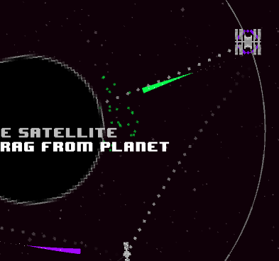

Guido Zuidhof Artificial Intelligence student
Hello! I'm an
AI student
Master's programme in Artificial Intelligence
Web and Language track
> Radboud University
at Radboud University in Nijmegen. I love creating and learning, and software development allows me to do just that.
Some things I like:
- Machine Learning, and data science in general.
- Game Development, my best game jam entry  Hello World A game created for the 48 hour solo game creation competition called Ludum Dare. Featured on the Unity blog. > Entry page ended up 6th overall!
- Open source. I aim to write most of my projects with an open license, others may use and or learn from it one day.
- The latest tech. I’m an avid hackernews reader.
- Airsoft. Occasionally I join a skirm to practice my 360-noscopes in real life.
Find me on GitHub or just shoot me an e-mail!